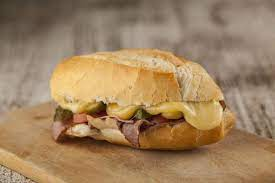

O sanduíche Bauru foi criado por Casimiro Pinto Neto, conhecido como "Bauru", em 1937 no bar Ponto Chic, em São Paulo. A receita original leva pão francês sem miolo, rosbife, queijo derretido na água, tomate e picles. O sanduíche tornou-se um sucesso e ganhou o nome de seu criador, que se inspirou na sua cidade natal. Em 2018, o Bauru foi reconhecido como patrimônio cultural imaterial do estado de São Paulo e, em 2024, foi registrado como patrimônio cultural de Bauru. Casimiro Pinto Neto, um estudante de direito apelidado de "Bauru", frequentava o Ponto Chic. Em 1937, ele pediu ao chapeiro para criar um sanduíche diferente, combinando pão francês, rosbife, queijo derretido, tomate e picles. O sanduíche foi um sucesso e logo outros clientes passaram a pedir um lanche "igual ao do Bauru". O sanduíche foi rapidamente incorporado ao cardápio do Ponto Chic e se espalhou para outros bares e restaurantes.

Igredientes:- 01 Pao frances fresco; 01 fatia de cada queijo: prato, estepe, gouda e suico; 05 fatias de rosbife; 02 rodelas de tomate; picles de pepino
Modo de Preparo:- Primeiro: Corte o pão ao meio no sentido vertical, tire um pouco do miolo. Ponha o rosbife, algumas fatias de pepino em conserva e o tomate. Segundo: Derreta o queijo: numa frigideira antiaderente, ponha uma camada finíssima de água no fundo. Leve ao fogo até a água ferver (é bem rápido). Ponha as fatias de queijo na água, aos poucos, espere dois ou três segundos e o queijo começa a derreter. Usando uma pinça longa, mexa o queijo rapidamente e, assim que derreter completamente, tire da panela, ponha direto no sanduíche e feche.